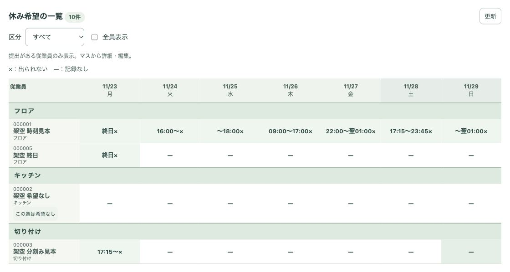
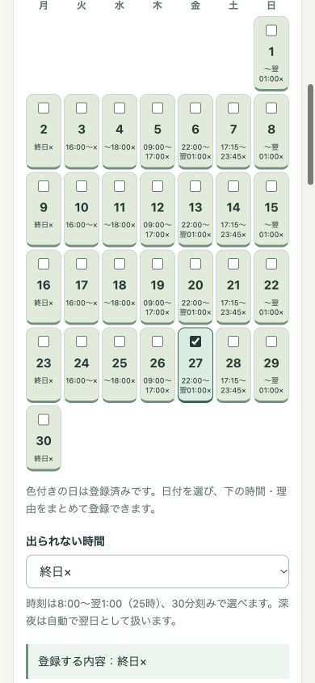
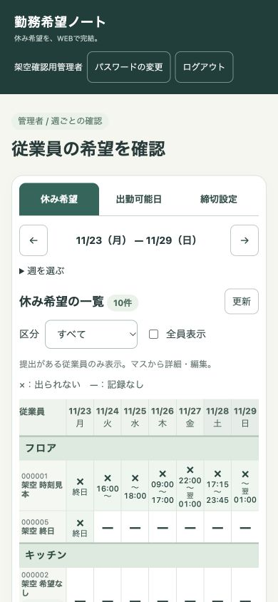
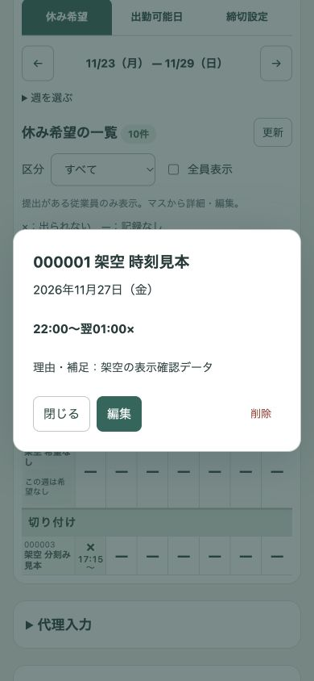

カスタマイズのご相談
店舗の運用に合わせたカスタマイズもご相談いただけます。内容により別途お見積もりとなります。
区分の分け方や確認したい項目など、内容をうかがったうえで対応できるかと費用をお伝えします。
休み希望ツール「勤務希望ノート」
休み希望・出勤可能日時を、スマホのブラウザでやり取り。集まった希望を従業員ごと・週ごとに一覧化し、日時を簡単に確認できます。

HOW IT WORKS
紙やLINEに散らばった希望を探し直す手間を減らし、スタッフの提出から管理者の確認へ。画像を選ぶと原寸で見られます。
スタッフはスマホのカレンダーで日付を選び、出られない時間や理由をまとめて登録します。

（原寸画像を新しいタブで開きます）届いた希望は、従業員ごと・区分ごとに一覧へ自動で並びます。スマホからでも同じ一覧を確認できます。

（原寸画像を新しいタブで開きます）矢印で週を切り替えて見比べ、気になるマスをタップすると日付・時間・理由の詳細を確認できます。

（原寸画像を新しいタブで開きます）実際の画面を使用しています。氏名・番号・希望内容はすべて架空の表示例です。
ほかに、出勤可能日の一覧、提出の締切設定、管理者による代理入力にも対応しています。シフトの自動作成・勤怠管理・給与計算は対象外です。
CUSTOMIZE & STATUS
店舗の運用に合わせたカスタマイズもご相談いただけます。内容により別途お見積もりとなります。
区分の分け方や確認したい項目など、内容をうかがったうえで対応できるかと費用をお伝えします。
販売準備中・価格未定です。
価格・提供形態・保守条件は検討中で、まだ決まっていません。サーバー等の運用費用が別に必要になる見込みです。
FAQ
不要です。スマートフォンやパソコンのブラウザで使うWebアプリです。ただし、利用する従業員の登録と、各自のログインが必要です。
いいえ。対応しているのは休み希望・出勤可能日の回収と確認です。シフトの自動作成、勤怠管理、給与計算は含みません。
はい。休み希望と出勤可能日は、それぞれの一覧に分けて確認できます。日付と時間を指定して提出し、管理者は週ごとに切り替えて確認します。
区分の分け方や確認項目など、カスタマイズのご相談を承ります。対応内容と費用は、事前のお見積もりで確認します。